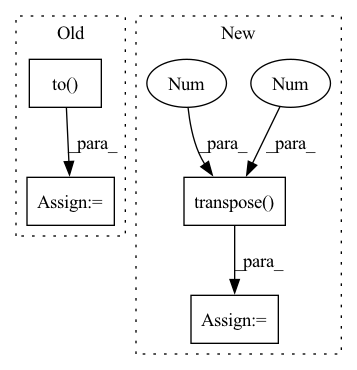

Pattern ID :3014

Before Change
if i >= 10: break
frames = frames.to(DEVICE) // [1, T, 3, h, w]
frames_vis = postprocess_img(frames.squeeze(dim=0)) // [T, 3, h, w]
input = frames[:, :VIDEO_IN_LENGTH] // [1, t, 3, h, w]
pred_rgb = pred_rgb_model.pred_n(input, pred_length=VIDEO_PRED_LENGTH) // [1, T, 3, h, w]
pred_rgb_vis = postprocess_img(pred_rgb) // [T, 3, h, w]
pred_rgb = torch.cat([input, pred_rgb], dim=1)
pred_rgb = torch.stack([seg_model(pred_rgb[:, i]) for i in range(pred_rgb.shape[1])], dim=1)
pred_rgb = pred_rgb.argmax(dim=2).squeeze() // [T, h, w]
pred_then_colorized_vis = colorize_semseg(postprocess_mask(pred_rgb), num_classes=SYNPICK_CLASSES) // [T, 3, h, w]
frames_seg = [seg_model(frames[:, i]).argmax(dim=1) for i in range(frames.shape[1])]
frames_seg = torch.stack(frames_seg, dim=1) // [1, 1, h, w]
input_seg = frames_seg[:, :VIDEO_IN_LENGTH] // [1, t, 1, h, w]
pred_mask = pred_mask_model.pred_n(input_seg, pred_length=VIDEO_PRED_LENGTH)
After Change
pred_mask_vis = colorize_semseg(postprocess_mask(pred_mask), num_classes=SYNPICK_CLASSES).transpose(0, 3, 1, 2) // [T, 3, h, w]
frames_colorized = colorize_semseg(postprocess_mask(frames_seg.squeeze()), num_classes=SYNPICK_CLASSES)
frames_colorized_vis = frames_colorized.transpose(0, 3, 1, 2) // [T, 3, h, w]
input_colorized = preprocess_img(frames_colorized[:VIDEO_IN_LENGTH]).to(DEVICE).unsqueeze(dim=0) // [b, t, 3, h, w]
colorized_then_pred = pred_colorized_mask_model.pred_n(input_colorized, pred_length=VIDEO_PRED_LENGTH)
In pattern: SUPERPATTERN
Frequency: 3
Non-data size: 4
Instances
Fragment ID: 11668657
Project Name: ais-bonn/vp-suite
Commit Name: 13016d4ab8ba4f8e7ee087155a6c5171f4d00ba3
Time: 2021-08-02
Author: boltres@ais.uni-bonn.de
File Name: scripts/visualize_4_way.py
M Class Name: AnonimousClass
N Class Name: AnonimousClass
M Method Name: visualize_4_way(1)
N Method Name: visualize_4_way(1)
M Parent Class:
N Parent Class:
M File Name: scripts/visualize_4_way.py
N File Name: scripts/visualize_4_way.py
M Start Line: 16
M End Line: 73
N Start Line: 17
N End Line: 74
'>
Before Change
with torch.no_grad():
for i in tqdm(range(10)):
frames = next(iter_loader).to(DEVICE) // [1, T, 3, h, w]
frames_vis = postprocess_img(frames.squeeze(dim=0)) // [T, 3, h, w]
input = frames[:, :VIDEO_IN_LENGTH] // [1, t, 3, h, w]
pred_rgb = pred_rgb_model.pred_n(input, pred_length=VIDEO_PRED_LENGTH)
pred_rgb = torch.cat([input, pred_rgb], dim=1) // [1, T, 3, h, w]
pred_rgb_vis = postprocess_img(pred_rgb.squeeze(dim=0)) // [T, 3, h, w]
pred_rgb = torch.stack([seg_model(pred_rgb[:, i]) for i in range(pred_rgb.shape[1])], dim=1)
pred_rgb = pred_rgb.argmax(dim=2).squeeze() // [T, h, w]
pred_then_colorized_vis = colorize_semseg(postprocess_mask(pred_rgb), num_classes=SYNPICK_CLASSES).transpose(0, 3, 1, 2) // [T, 3, h, w]
frames_seg = torch.stack([seg_model(frames[:, i]) for i in range(frames.shape[1])], dim=1).argmax(dim=2) // [1, T, 1, h, w]
frames_seg_in = torch.stack([(frames_seg == i) for i in range(SYNPICK_CLASSES)], dim=2).float() // [1, T, c, h, w] one-hot float
input_seg = frames_seg_in[:, :VIDEO_IN_LENGTH] // [1, t, c, h, w]
pred_mask = pred_mask_model.pred_n(input_seg, pred_length=VIDEO_PRED_LENGTH).argmax(dim=2) // [1, n, 1, h, w]
pred_mask = torch.cat([input_seg.argmax(dim=2), pred_mask], dim=1).squeeze() // [T, h, w]
pred_mask_vis = colorize_semseg(postprocess_mask(pred_mask), num_classes=SYNPICK_CLASSES).transpose(0, 3, 1, 2) // [T, 3, h, w]
frames_colorized = colorize_semseg(postprocess_mask(frames_seg.squeeze()), num_classes=SYNPICK_CLASSES)
frames_colorized_vis = frames_colorized.transpose(0, 3, 1, 2) // [T, 3, h, w]
input_colorized = preprocess_img(frames_colorized[:VIDEO_IN_LENGTH]).to(DEVICE).unsqueeze(dim=0) // [b, t, 3, h, w]
colorized_then_pred = pred_colorized_mask_model.pred_n(input_colorized, pred_length=VIDEO_PRED_LENGTH)
colorized_then_pred = torch.cat([input_colorized, colorized_then_pred], dim=1).squeeze(dim=0)
colorized_then_pred_vis = postprocess_img(colorized_then_pred) // [T, 3, h, w]
save_vid_vis(
out_fp=os.path.join(cfg.out_dir, "4way_vis_{}.gif".format(str(i))),
After Change
seg_pred_color_vis = colorize_semseg(postprocess_mask(seg_then_pred), num_classes=SYNPICK_CLASSES).transpose(0, 3, 1, 2) // [T, 3, h, w]
seg_colorized = colorize_semseg(postprocess_mask(seg.squeeze()), num_classes=SYNPICK_CLASSES)
seg_color_per_frame_vis = seg_colorized.transpose(0, 3, 1, 2) // [T, 3, h, w]
input_colorized = preprocess_img(seg_colorized[:VIDEO_IN_LENGTH]).to(DEVICE).unsqueeze(dim=0) // [b, t, 3, h, w]
seg_color_pred = pred_colorized_mask_model.pred_n(input_colorized, pred_length=VIDEO_PRED_LENGTH)
'>
Fragment ID: 11667977
Project Name: ais-bonn/vp-suite
Commit Name: 12f06dedbeb7683194c69214a6c984951ddd53a5
Time: 2021-08-02
Author: boltres@ais.uni-bonn.de
File Name: scripts/visualize_4_way.py
M Class Name: AnonimousClass
N Class Name: AnonimousClass
M Method Name: visualize_4_way(1)
N Method Name: visualize_4_way(1)
M Parent Class:
N Parent Class:
M File Name: scripts/visualize_4_way.py
N File Name: scripts/visualize_4_way.py
M Start Line: 28
M End Line: 62
N Start Line: 33
N End Line: 76
'>
Before Change
if self._use_dB_normalization:
audio_segment.normalize(target_db=self._target_dB)
// 获取音频特征
samples = audio_segment.to("int16")
waveform = torch.from_numpy(np.expand_dims(samples, 0)).float()
if self._feature_method == "spectrogram":
// 计算声谱图
feature = spectrogram(waveform=waveform,
After Change
audio_segment.normalize(target_db=self._target_dB)
// 获取音频特征
waveform = torch.from_numpy(np.expand_dims(audio_segment.samples, 0)).float()
feature = self.feat_fun(waveform).squeeze(0).transpose(1, 0).numpy()
// 归一化
mean = np.mean(feature, 1, keepdims=True)
std = np.std(feature, 1, keepdims=True)
'>
Fragment ID: 11668383
Project Name: yeyupiaoling/audioclassification-pytorch
Commit Name: f9a39f29e647cb3c02b8bb832a8d66c8655e4b1e
Time: 2022-12-06
Author: yeyupiaoling@foxmail.com
File Name: macls/data_utils/featurizer/audio_featurizer.py
M Class Name: AudioFeaturizer
N Class Name: AudioFeaturizer
M Method Name: featurize(2)
N Method Name: featurize(2)
M Parent Class: object
N Parent Class: object
M File Name: macls/data_utils/featurizer/audio_featurizer.py
N File Name: macls/data_utils/featurizer/audio_featurizer.py
M Start Line: 48
M End Line: 66
N Start Line: 57
N End Line: 58